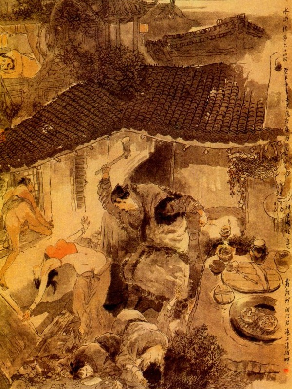
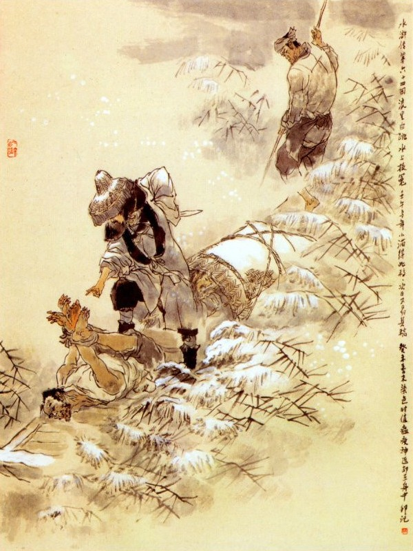

Bấy Sách Siêu bị bắt, đám quân chạy tán loạn về thành báo với Lương Trung Thư, Trung Thư nghe tin cả kinh, truyền cho quân đóng chặt cửa thành, không dám đem quân ra đánh rồi toan đem giết Lư Tuấn Nghĩa và Thạch Tú, song sợ Tống Giang tức giận phá thành mà quân viện của triều đình không kịp tới thì nguy hiểm đến nơi, nên phải giam hai người ở đó và dâng biểu về tâu triều đình các lẽ.
Bên kia bắt trói Sách Siêu, đem giải vào trướng Trung Quân, Tống Giang trông thấy cả mừng, thân hành cởi trói cho Sách Siêu, mời vào trong trướng thiết rượu rồi lấy lời ngon ngọt nói với Sách Siêu rằng:
- Tướng Quân coi xem, anh em chúng tôi cũng là quá nửa trong đám quan quân ra cả, vậy nếu Tướng Quân có lòng hạ cố thì xin ở đây giúp Tống Giang tôi để thay Trời làm Đạo mà cứu lấy sinh linh.
Dương Chí cũng đến chào hỏi Sách Siêu, cùng nhau kể nỗi ly biệt, đôi bên gạt thầm lụy thảm rồi Sách Siêu xin vâng lời mà ở đó. Tống Giang thấy vậy cả mừng liền sai đặt tiệc thiết đãi trong trướng.
Ngày hôm sau các tướng lại hết sức đánh thành mấy ngày trời, không sao phá nổi. Tống Giang lấy làm lo nghĩ băn khoăn mà đứng ngồi vơ vẩn không yên. Một hôm Tống Giang đương ngồi buồn trong trướng, bỗng thấy ngọn gió đìu hiu đưa đến làm cho ngọn đèn trước trướng đã tắt hẳn rồi lại loé lên như đom đóm. Khi trận gió thổi qua chợt thấy dưới bóng đen có một người đi đến, ra ý dùng dằng băn khoăn, gọi Tống Giang mà hỏi rằng:
- Anh em ở đây làm gì như vậy?
Tống Giang ngẩng nom, té ra là Tiều Cái ở đó, chàng liền kinh ngạc đứng dậy đáp rằng:
- Ca Ca ở đâu đến đây? Đại thù tôi chưa báo được, trong lòng thực là áy náy không yên. Nay nhân việc binh bận rộn, không được chu tất việc tế lễ, vậy vong linh Ca Ca về đây, chắc là có việc gì mắng trách đó chăng?
- Hiền đệ không biết, tôi với hiền đệ là anh em tâm phúc, nên tôi phải đến đây để cứu đó. Hiện nay cái nạn sau lưng sắp phát, chỉ có một vị sao thiêng ở đất Giang Nam thì mới khu trừ đi được, vậy ba mươi sáu chước chước nào là hơn, hiền đệ phải liệu mau đi, kẻo sau lại hối hận là anh em không cứu.
Tống Giang nghe nói vội sấn đến gần mà hỏi rằng:
- Âm hồn Ca Ca đến đây, có việc gì xin nói thực cho.
Tiều Cái đáp rằng:
- Thôi không cần nói lắm phải lập tức thu xếp về đi chớ lưu luyến đây nữa. Tôi đi đây.
Nói đoạn Tống Giang sịch mở mắt ra, mới biết là một giấc mộng Nam Kha canh vắng, chàng liền mời Ngô Dụng đến thuật giấc mộng cho nghe. Ngô Dụng nói rằng:
- Tiều Thiên Vương đã hiển thánh như vậy chắc là đích thực chứ không sai. Vả hiện nay khí trời đương lạnh, gió bấc tuyết sương, quân mã ở lâu không tiện, vậy cũng nên tạm lui về núi chờ khi Đông hết sang Xuân rồi sẽ đem quân đi đánh cũng chưa muộn gì. Việc đó xin nhân huynh liệu trước thì hơn.
- Quân Sư nói đã đành là phải, song Lư Viên Ngoại cùng Thạch Tú còn đương bị giam ở trong lao, một ngày đăng đẳng mong mỏi anh em đến cứu, nay nếu bây giờ rút quân trở về thì tất là tính mạng của họ khó lòng mà toàn được. Nói thế thực là tiến thoái lưỡng nan, ta nên bàn kỹ xem sao rồi sẽ liệu.
Nói đoạn hai người bàn bạc một đêm hôm ấy, không quyết định ra sao.
Sáng hôm sau Tống Giang bỗng thấy tinh thần mỏi mệt, mình nóng như sôi, đầu nhức như búa bổ, nằm liên miên ở giường mà không muốn dậy.
Các Đầu Lĩnh thấy vậy đều tụ họp trước trướng để thăm hỏi trông nom.
Khi các tướng nom đến Tống Giang thấy đằng sau lưng có một mụn như hạt đậu nổi lên, đỏ vầng như viên than nóng. Ngô Dụng thấy vậy nói với các Đầu Lĩnh rằng:
- Cái bệnh này không phải là ung cũng không phải là nhọt, duy có thứ bột đậu xanh, khả dĩ giữ được khí độc không cho thấm vào trong ruột, vậy ta nên tìm thứ bột ấy cho Ca Ca uống mới được. Còn về việc thuốc men thì ở đây xa lạ, không biết rằng tìm đâu cho được thầy hay?
Ngô Dụng chưa nói dứt lời thì thấy Lãng Lý Bạch Điều nói lên rằng:
- Khi trước mẹ tôi ở Tầm Dương, bị cái hậu bối, thuốc men mãi không khỏi bệnh, sau mới được ông An Đạo Toàn ở phủ Kiến Khang đến chữa thì bệnh lập tức khỏi ngay, từ đó tôi lấy làm cảm phục ông ta mà kiếm được tiền nong là đem đến biếu. Nay bệnh Huynh trưởng như vậy, tưởng có người ấy đến thì thế nào cũng khỏi, duy đây sang Kiến Khang Châu thì đường sá diệu vợi, nếu muốn kịp thì phải đi ngay cho chóng mới được.
Ngô Dụng nói:
- Huynh trưởng nằm mê thấy Tiều Thiên Vương nói có vạ sau lưng, tất phải có linh tinh ở Giang Nam mới được, có lẽ là người đó chăng?
Tống Giang nói:
- Nếu có phải vậy thì Trương huynh nên lập tức đi mời về đây cứu mệnh cho ta, chớ khá từ nan mới được.
Ngô Dụng liền lấy ra trăm lạng vàng để đưa thầy thuốc và đưa ba mươi lạng bạc cho Trương Thuận làm lộ phí mà dặn rằng:
- Ngươi phải lập tức đi ngay chớ nên để lỡ. Ta nay nhổ trại kéo quân về núi, ngươi đi mau mau, đón người ta về đó, phải cho đến nơi đến chốn mới được.
Trương Thuận vâng lời, lập tức gói khăn gói từ biệt mọi người ra đi. Ngô Dụng lại sai lấy xe đặt Tống Giang lên rồi nhổ trại thu quân đêm hôm đó kéo về Sơn Bạc.
Lương Trung Thư nghe tin Tống Giang đã rút quân về, trong bụng hoài nghi không hiểu ra sao? Lý Thành Văn Đạt đều nói ra. Lão Ngô Dụng khôn ngoan quỷ quyệt, lắm kế nhiều mưu, ta chỉ nên giữ vững, chớ ra đuổi mà khốn.
Lương Trung Thư nghe nói khen phải, liền sai đóng thành giữ vững mà không dám đuổi theo.
Về phần Trương Thuận một mình khoác khăn gói ra đi, trời đông sương tuyết lạnh lẽo đìu hiu, trên đường vắng ngắt vắng tanh, riêng có một thân vò võ. Khi đến sông Tầm Dương, trông quanh trông quẩn không có một chiếc đò nào để sang ngang được, trong lòng lấy làm sốt ruột vô cùng. Chàng lại theo nẻo bờ sông đi một lát, chợt trông thấy trong đám lau lách, có tiếng sột soạt rồi có một người đầu đội nón lá, mình mặc áo tơi, chạy ra hỏi Trương Thuận rằng:
- Ông muốn đi đâu?
- Ta muốn sang phủ Kiến Khang, có một việc rất cần, chở giúp cho sang rồi ta sẽ trả nhiều tiền. Chở cũng được, không ngại gì, nhưng bây giờ sắp tối rồi, ông sang bên kia cũng không có chỗ trọ, vậy bất nhược ông hãy ngủ tạm ở thuyền tôi rồi gần sáng gió im tuyết lạnh, tôi sẽ chở sang, phải cho nhiều tiền mới được.
Trương Thuận nghe nói, lấy làm phải, liền theo người lái đò cùng đi xuống lối bờ lau. Khi ra tới mé sông thấy có một chiếc thuyền nhỏ buộc ở đó. Trong mũi thuyền có một hậu sinh gầy gò đương ngồi quay vào lò lửa để sưởi. Lái đò đưa Trương Thuận xuống thuyền mời vào trong khoang, cởi áo ướt ra, gọi tên hậu sinh đem ra lò lửa để hơ rồi Trương Thuận mở khăn gói ra, lấy chăn bông nằm cuộn tròn ở trong khoang. Nằm một lát, Trương Thuận gọi lái đò đến bảo rằng:
- Ở đây có rượu không? Để lại cho ta một ít thì tốt lắm.
- Rượu thì đây không có, chỉ có ít cơm, ông có xơi để tôi dọn. Trương Thuận ngồi nhổm dậy, bảo xới cơm lên ăn mấy bát rồi lại nằm lăn xuống ngủ.
Chàng đi mấy hôm trời khó nhọc, nay được chăn ấm chiếu êm, liền nằm thiếp đi lúc nào không biết. Bấy giờ tên hậu sinh kia vừa ngồi hơ áo trên đống lửa, vừa quay lại nhìn Trương Thuận rồi khẽ gọi lái đò mà bảo rằng:
- Ca Ca có trông thấy không? Anh lái đò gật đầu hiểu ý, quay vào sờ gói của Trương Thuận rồi khẽ bảo tên hậu sinh rằng:
- Ngươi đẩy thuyền ra giữa sông sẽ hạ thủ thì tiện hơn.
Tên hậu sinh nghe nói, liền khẽ đẩy mui bồn nhảy lên trên bờ, cởi giây thuyền ra rồi lấy sào sẽ đẩy thuyền lìa bến mà chèo ra ngoài giữa sông. Khi tới giữa dòng sông, tên lái đò cắm thuyền ở đó, lấy giây thừng lừa trói Trương Thuận lại rồi mở sạp thuyền lấy con dao lên. Bấy giờ Trương Thuận tỉnh dậy thấy hai tay bị trói, không sao cựa được rồi thấy tên lái đò cầm dao lăm lăm đứng bên cạnh mình.
Chàng lấy làm kinh ngạc liền nói lên rằng:
- Hảo hán tha cho tôi, tôi xin đưa hết tiền nong ra nộp. Tên lái đò ung dung đáp rằng:
- Tiền cũng cần mà tính mạng anh cũng cần.
- Vâng, vậy ông làm phúc cho tôi được toàn thân mà chết thì linh hồn tôi không khi nào oán đến ông.
Tên lái đò cười nhạt mà nói rằng:
- Cái đó thì được lắm.
Nói đoạn vất con dao xuống, xách Trương Thuận mà ném xuống nước rồi quay vào mở khăn gói ra xem. Khi lái đò trông thấy khăn gói có nhiều vàng bạc thì ngẩn người ra, cau lông mày một cái rồi gọi tên hậu sinh ra mà bảo rằng:
- Ngũ đệ đến đây ta bảo.
Tên hậu sinh nghe nói, vừa quay cổ đi vào thì bị tên lái đò đâm cho một nhát mà gạt phăng xuống giữa dòng sông. Đoạn rồi tên lái đò rửa sạch máu me trên thuyền mà nhổ sào kẽo kẹt chèo đi. Thực là:
Máu tham thấy lợi thì mê,
Trời cao đất rộng thiếu chi chuyện đời.
Ghê thay những kẻ vô loài,
Gươm vàng giáo bạc giết người đã bao?
Nói về Trương Thuận vốn là tay lặn nước đã quen, xưa nay thường ở dưới nước bốn năm đêm mới lên cũng được. Hôm đó chàng bị tên lái đò trói quăng xuống sông, liền cắn đứt dây trói ra rồi mới bơi lên mặt nước mà đi sang mạn bờ bên kia. Khi đó đi xa trông thấy đám rừng cây về phía bên Nam, có ánh đèn ngấp ngó, chàng liền thoi thóp lên bờ, để nguyên quần áo lướt thướt mà đi thẳng vào. Chàng đi đến chỗ ánh lửa thấy có một hàng cơm, ánh lửa xuyên thầu vách thủng mà soi ra ngoài, chàng gõ cửa một tiếng, thấy có ông lão chạy ra mở, chàng liền cúi đầu chào ông lão mà xin hỏi trọ.
Ông lão hỏi rằng:
- Anh có phải là bị cướp ở sông rồi nhảy ngay xuống nước trốn đến đây không?
Trương Thuận nói:
- Chẳng giấu gì cụ, tôi ở Sơn Đông, muốn đi sang phủ Kiến Khang có việc, chẳng may đêm qua xuống đò sang ngang, bị tên hung đồ trói bỏ xuống sông mà cướp lấy cả tiền nong quần áo, nhân vì tôi biết lội nước, nên mới thoát nạn mà lên được đến đây xin cụ cứu cho tôi với.
Ông già nghe nói mời Trương Thuận vào nhà bảo đem quần áo ra hơ và đem rượu nóng ra thiết đãi, ông già lại hỏi Trương Thuận rằng:
- Bác tên họ là gì, ở Sơn Đông sang đây có việc chi?
- Tôi họ Trương là anh em với thầy lang An ở phủ Kiến Khang, nay nhân rảnh việc đến thăm anh em cũng không có việc chi cần gấp.
- Bác ở Sơn Đông đến đây, có đi qua Lương Sơn Bạc không?
- Có, chính tôi đi qua lối đó.
- Tôi thấy nói chủ Sơn Bạc là Tống Giang, không hay cướp bóc hành khách cũng không hay giết hại người ta, chỉ chăm chăm thay Trời làm Đạo có phải không?
- Vâng, Tống Đầu Lĩnh chỉ ghét đám tham quan lại nhũng mà không hại đến lương dân bao giờ.
- Tôi thấy nói tụi Tống Giang thực là nhân nghĩa, chỉ thương nghèo cứu khổ, chứ không như bọn giặc cỏ ở đây. Nay nếu được tụi ấy đến đây thì may ra đám lương dân cũng được khoái hoạt mà khỏi bị đám tham quan nhũng lại như trước.
Trương Thuận nghe nói đến đó, liền bảo với ông già rằng:
- Tôi nói câu này thì ông bỏ qua đi cho, chính tôi là Lãng Lý Bạch Điều Trương Thuận ở Lương Sơn Bạc đây. Nhân vì Tống Công Minh Ca Ca tôi bị lên hậu bối, sai tôi đem một trăm lạng vàng sang đón An Đạo Toàn về chữa, ai ngờ ngủ dưới thuyền bị nó cướp mất tiền trói bỏ dưới sông rồi tôi cắn đứt cả thừng mà lội lên đây.
Ông già có vẻ vui mừng mà rằng:
- Bác là hảo hán ở Lương Sơn thì lão tôi cho thằng cháu trai ra chào bác.
Nói đoạn liền đứng dậy đi vào nhà trong. Được một lát có một người hậu sinh gầy gò ở trong đi ra, vái chào Trương Thuận mà rằng:
- Tôi được nghe đại danh Ca Ca đã lâu, nay mới được gặp đây, thực là hạnh phúc. Tôi đây họ Vương Bày vai thứ sáu, vì sức chạy nhảy rất nhanh nên người ta thường gọi là Hoạt Diêm La Đình Lục, bình sinh chỉ thích lội nước đánh gậy cũng đã học tập được nhiều thầy mà không tìm được người giỏi, nay tạm bán ngôi hàng đây cho qua loa ngày tháng đó thôi. Mới rồi mấy người cướp tiền của Ca Ca tôi đều biết cả. Một người là Tiết Giang Quỷ Trương Vượng và một người hậu sinh gầy gò tên là Du Lý Thu Tôn Ngũ, người ở huyện Hoa Đình đến đó. Hai tên ấy vốn quen nghề cướp bóc ở sông xưa nay, xin Ca Ca cứ vững tâm, ở đây vài hôm, để đợi chúng đến đây uống rượu rồi tôi sẽ báo thù cho Ca Ca.
Trương Thuận cảm tạ mà rằng:
- Tống Ca Ca tôi đương mắc bệnh, việc đón thầy rất cần, vậy sáng mai thế nào chúng tôi cũng phải đón an Đạo Toàn rồi về đây cũng được.
Vương Đình Lục liền lấy áo xiêm mới cho Trương Thuận thay rồi giết gà làm cơm để đãi.
Sáng hôm sau trời quang tuyết tạnh, Vương Đình Lục lấy mười lạng bạc, đưa cho Trương Thuận đi vào thành. Trương Thuận đi vào thành đến nhà An Đạo Toàn, thấy Đạo Toàn đương ngồi bán thuốc, chàng liền lật đật chạy vào để chào. Đạo Toàn trông thấy Trương Thuận thì có vẻ ngạc nhiên mà rằng:
- Anh em đi đâu đã lâu mà không được gặp, nay có việc chi lại đến đây?
Nói đoạn mời Trương Thuận vào nhà trong, Trương Thuận đem chuyện mình thuật rõ cho An Đạo Toàn nghe và thú thực bị cướp mất tiền nong, nay chỉ có tay không đến đó. An Đạo Toàn nói:
- Tống Công Minh là một bậc nghĩa sĩ xưa nay, đáng lẽ cần phải chữa ngay mới phải, song hiềm vì nhà tôi mới mất dạo trước, trong nhà không có ai là người thân thuộc trông nom, như vậy cũng khó lòng mà đi ngay được.
Trương Thuận cố vật nài mà rằng:
- Nếu Huynh trưởng không có lòng cứu giúp thì tôi quyết nhiên không dám về núi nữa.
An Đạo Toàn ngần ngừ hồi lâu rồi nói rằng:
- Hãy để tôi liệu xem sao.
Trương Thuận lại cố tình nói mãi, về sau An Đạo Toàn mới chịu y lời để đi. Nguyên An Đạo Toàn mới đi lại với một con đào hát ở Phủ Kiến Khang, tên là Lý Xảo Nô, đôi bên tình ý rất là thân mật với nhau. Chiều hôm đó An Đạo Toàn dẫn cả Trương Thuận đến nhà Lý Xảo Nô thiết đãi rượu chè rồi Lý Xảo Nô bái Trương Thuận làm thúc thúc. Khi uống rượu được một vài tuần, An Đạo Toàn bảo với Lý Xảo Nô rằng:
- Đêm nay ta nghỉ đây một tối rồi sáng mai phải đi Sơn Đông với anh em có lẽ một tháng, hay vài mươi ngày thì mới về được.
Lý Xảo Nô đáp rằng:
- Tôi không thích cho chàng đi, nếu chàng không nghe lời tôi thì từ rày đừng đến cửa tôi nữa.
- Ta đã sắp sửa thuốc men rồi, chỉ sáng mai là phải đi, nàng hãy bằng lòng vậy, tôi đi nhanh chóng về ngay, không dám trì trện đâu mà ngại.
Lý Xảo Nô lại làm bộ uốn éo, nằm ngả vào lòng An Đạo Toàn mà nói rằng:
- Nếu chàng không nghĩ đến tôi thì cứ đi ngay, tôi chỉ nguyền rủa cho nát từng mảnh thịt ra thôi.
Trương Thuận nghe nói tức giận vô cùng, không thể làm sao cho tiện, tối hôm ấy An Đạo Toàn say rượu nằm lăn ở trong phòng Lý Xảo Nô mà ngủ.
Xảo Nô bảo với Trương Thuận rằng:
- Anh đi đâu mà ngủ chứ nhà tôi đây chật lắm không có chỗ ngủ.
Trương Thuận nói:
- Để đợi Ca Ca tôi tỉnh rượu rồi cùng đi.
Xảo Nô đuổi Trương Thuận không được đành cho chàng ngủ ở một cái phòng con ngay gần ngoài cửa, Trương Thuận nằm đó trong lòng lấy làm băn khoăn vơ vẩn không yên, không sao chợp mắt đi được. Vào khoảng cuối canh một có người gõ cửa ở ngoài. Trương Thuận liền ghé vào chỗ vách để nom ra thì thấy có một người đi vào, nói với bà già ở nhà Xảo Nô. Bà lão bảo với người kia rằng:
- Bác đi đâu mà lâu mới đến đây. Hôm nay thầy lang nằm say trong phòng kia, còn làm thế nào được?
Người kia nói:
- Tôi có mười lạng vàng muốn đưa cô ấy để kéo vòng hột, vậy xin cụ làm ơn cho tôi được gặp cô ấy một lát.
Mụ già nói:
- Nếu vậy bác ngồi tạm ở buồng tôi rồi tôi gọi nó sang.
Nói đoạn mụ già dẫn người kia đi vào phòng. Trương Thuận nhờ ánh sáng nom mặt anh chàng kia, té ra chính là anh Tiết Giang Quỷ Trương Vượng, ăn cắp khăn gói ở bến sông Tầm Dương trước. Sau lại thấy mụ già đem chè rượu ra thiết đãi Trương Vượng và gọi Xảo Nô sang để tiếp chuyện. Trương Thuận thấy vậy sốt ruột bừng bừng, toan xông chạy vào để đánh, sau nghĩ đi nghĩ lại sợ lỡ mất việc, lại đành phải im để nghe ngóng xem sao.
Hồi lâu ước chừng vào khoảng canh ba, hai người nhà đều say rượu chúi ở dưới bếp, còn mụ già cũng say nhứ say nhừ mà ngồi ngất ngưỡng ở trên ghế. Trương Thuận đi thẳng xuống bếp vớ được con dao phay chém cho mụ già một phát ngã lăn xuống ghế rồi toan quay ra chém hai đứa người nhà. Bất đồ con dao nhụt quá, chém được một người thì lưỡi đã cong cờn cả lên, không sao dùng được nữa.

Hai đứa người nhà thấy vậy kinh sợ đã toan kêu thì Trương Thuận đã vớ ngay được cái búa bổ củi ở bếp, chặt luôn cho mỗi đứa một nhát, chết quay ra đó. Bấy giờ Xảo Nô đương ngồi trong phòng với Trương Vượng, nghe thấy tiếng động, vội vàng chạy ra để xem. Dè đâu vừa đẩy cửa ra bị Trương Thuận chém cho một nhát búa cũng chết lăn ra nốt. Trương Vượng nhanh mắt trông thấy Xảo Nô bị chém, liền đẩy cửa ra lối sau rồi nhảy qua tường mà trốn.
Trương Thuận giết xong bốn người, trong bụng lấy làm băn khoăn khó chịu. Chợt nhớ ra chuyện Võ Tòng giết nhà Trương Đô Giám khi trước, chàng kiền xé một miếng vải thấm máu đỏ mà viết lên tường vôi trắng rằng: “Kẻ giết người là An Đạo Toàn".
Chàng viết luôn mười mấy chỗ như thế rồi rửa sạch chân tay, lại vào phòng ngồi đợi. Đến lúc canh năm trời gần sắp sáng, An Đạo Toàn tỉnh dậy hỏi lên rằng:
- Người yêu của ta đâu?
Trương Thuận nghe nói, liền chạy đến bảo Đạo Toàn rằng:
- Ca Ca phải im tiếng, để tôi đưa đến cho mà xem người yêu.
Nói đoạn dắt An Đạo Toàn ra cửa phòng cho xem. An Đạo Toàn ra xem thấy tên nhà dưới bếp có bốn cái xác chết nằm đó thì lấy làm kinh ngạc rụng rời cả chân tay như người ngộ gió. Trương Thuận lại trỏ lên những chỗ viết chữ ở trên tường mà nói rằng:
- Ca Ca đã trông thấy chữ của Ca Ca viết chưa?
An Đạo Toàn trông thấy lại còn ngẫn người ra rồi kêu lên rằng:
- Anh làm thế này thì khổ tôi quá!
Trương Thuận nói:
- Bấy giờ chỉ có hai cách tùy bác muốn làm thế nào thì làm? Nếu bác kêu lên thì tôi chạy ngay, để mặc cho bác đền mạng người chết. Bằng bác muốn cho êm ả mọi việc rồi xin về nhà gói ghém thuốc men rồi đi ngay lên Lương Sơn Bạc với tôi mới được. Có hai đường ấy muốn sao mặc lòng.
An Đạo Toàn thở dài mà than rằng:
- Sao anh làm tàn nhẫn quá thế? Thôi bây giờ còn biết thế nào được nữa?
Nói đoạn liền dẫn Trương Thuần về nhà gói ghém thuốc men rồi đi theo với Trương Thuận. Trương Thuận đưa An Đạo Toàn cùng ra hàng rượu Vương Đình Lục. Vương Đình Lục bảo với Trương Thuận rằng:
- Hôm qua Trương Vượng qua đây, tiếc vì không gặp Ca Ca ở nhà.
Trương Thuận nói rằng:
- Chính tôi cũng có gặp, nhưng bấy giờ không kịp đến được hắn ta. Ý tôi muốn làm được việc lớn chứ có cần gì sự báo thù vặt ấy?
Vừa nói dứt lời thì thấy Vương Đình Lục nói lên rằng:
- Kìa Trương Vượng đương đi ở đây kìa.
Trương Thuận dặn rằng:
- Để yên dừng nói xem hắn ta đi đâu.
Nói đoạn quay ra nom thì thấy Trương Vượng đang lững thững đi ra bến thuyền. Vương Đình Lục chạy theo gọi với Trương Vượng mà nói rằng:
- Bác để thuyền chở mấy người bà con của tôi sang sông với.
Trương Vượng quay lại đáp rằng:
- Có đi thuyền thì ra đi mau.
Vương Đình Lục quay vào bảo với Trương Thuận. Trương Thuận bảo An Đạo Toàn rằng:
- An huynh cho tôi mượn quần áo của bác, bác mặc quần áo của tôi rồi ta cùng đi ra thuyền.
An Đạo Toàn hỏi rằng:
- Làm thế là ý gì?
- Tôi khắc có cách bác bất tất phải hỏi.
An Đạo Toàn liền đổi quần áo cho Trương Thuận rồi hai người cùng ăn mặc chỉnh tề ra đi. Vương Đình Lục vác khăn gói thuốc của An Đạo Toàn đưa hai người ra bến thuyền. Trương Vượng đẩy thuyền vào bờ, ba người cùng bước xuống thuyền rồi Trương Vượng chèo kẽo kẹt ra giữa dòng sông. Khi ra giữa dòng sông Trương Thuận bước vào trong khoang lật ván thuyền tìm thấy con dao của Trương Vượng rồi gọi lên rằng:
- Bác lái vào mau đây, sao trong thuyền có vết máu thế này?
Trương Vượng đáp lên rằng:
- Xin ông chớ cười tôi.
Chàng vừa nói vừa chui vào trong khoan để xem. Bất đồ vào tới nơi bị Trương Thuận đẩy ngã xuống sạp thuyền rồi đề chặt xuống mà quát lên rằng:
- Quân cường đạo, có biết người khách đi thuyền lúc mưa tuyết hôm nọ không?
Trương Vượng ngóc cổ lên nom rõ Trương Thuận, liền nín lặng mà không nói chi cả. Trương Thuận quát hỏi rằng:
- Quân chó má này, mày đã mưu lấy một trăm lạng vàng của ta, lại toan hại ta nữa là nghĩa làm sao? Còn người hậu sinh gầy gò hôm ấy đâu?
Trương Vượng nói rằng:
- Dám thưa hảo hán, vì tôi thấy nhiều vàng, sợ nó chia mất nên tôi giết nó mà bỏ xuống sông ngay hôm ấy rồi.
Trương Thuận lại quát lên rằng:
- Quân chó má này, ông đây đẻ ở bến Tầm Dương, lớn ở dưới núi Tiểu Cô đã từng buôn bán chài lưới, thiên hạ ai không biết tiếng. Sau nhân đến cướp Giang Châu, chiếm Lương Sơn Bạc, theo cùng ông Tống Công Minh ngang dọc bốn phương, ai không sợ hãi! Thế mà bây dám lừa ta xuống thuyền, trói ném xuống sông để cướp tiền bạc. Nếu ta không biết lội nước thì phỏng còn gì tính mạng với ngươi? Ngày nay oan thù gặp gỡ ta không thể tha ngươi được.

Nói đoạn liền vớ lấy cái thừng trói gò bốn chân tay rồi xach ra mạn thuyền quăng tõm xuống sông mà nói rằng:
- Ta tha cho mày một mũi dao đó.
Vương Đình Lục nom thấy lấy làm than thở bồi hồi vô hạn. Trương Thuận lại quay vào lục ở trong thuyền tìm lấy món tiền hôm trước gói vào trong bọc rồi ba người chèo thuyền vào bờ. Khi đến bờ sông Trương Thuận bảo với Vương Đình Lục rằng:
- Ân nghĩa của hiền đệ, không bao giờ tôi dám quên được, nay nếu hiền đệ có lòng hạ cố thì xin trở về thu xếp tửu điếm rồi đưa phụ thân lên núi Lương Sơn để cùng tụ nghĩa chẳng hay hiền đệ nghĩ sao?
Vương Đình Lục đáp rằng:
- Ca Ca dạy thế thích hợp ý tôi, tôi xin lục tục theo sau lập tức.
Nói đoạn bái biệt hai người, lên thuyền trở về thu xếp nhà cửa để dẫn phụ thân đi lên Lương Sơn Bạc. Bên kia Trương Thuận khoác khăn gói thuốc, dẫn An Đạo Toàn theo đường về phía Bắc để đi. An Đạo Toàn vốn người yếu đuối, đi bộ không quen, khi đi được ba mươi dặm đường thì mỏi mệt tay chân không sao đi được nữa. Trương Thuận mời vào trong hàng nghỉ và sai dọn rượu ra để thiết đãi. Đương khi ăn uống chợt thấy một người chạy vào gọi Trương Thuận mà bảo rằng:
- Sao anh em đi chậm thế?
Trương Thuận nghe nói ngẩng lên nom thấy Thần Hành Thái Bảo Đới Tung ăn mặc giả dạng khách buôn đến đó, liền vội vàng bảo An Đạo Toàn đứng dậy vái chào rồi cùng ngồi nói chuyện với nhau. Trương Thuận hỏi bệnh tình Tống Công Minh, Đới Tung đáp rằng:
- Hiện nay Tống Ca Ca tinh thần hôn mê, cơm cháo không ăn, có lẽ sắp nguy mất!
Trương Thuận nghe nói bổng ra vẻ xót thương mà chan chứa tuôn đôi hàng lụy. An Đạo Toàn hỏi Đới Tung rằng:
- Trông sắc da và sắc huyết ra thế nào?
Đới Tung đáp:
- Trông sắc da nhờn nhợt, trọn ngày chỉ kêu đau rền rĩ, tính mạng khó lòng mà toàn được!
- Nếu thịt da còn biết đau đớn thì còn chữa được, nhưng chỉ sợ quá ngày thì nguy mất.
Đới Tung nói rằng:
- Nếu vậy tôi có cách đi nhanh được, xin ngài đi ngay bây giờ cho.
Nói đoạn liền lấy hai miếng giáp mã buộc vào chân An Đạo Toàn khoác lấy khăn gói thuốc, dặn Trương Thuận ở lại sau rồi làm phép Thần Hành đưa An Đạo Toàn về trước. Trương Thuận nghỉ ở hàng đó mấy hôm thì thấy bố con Vương Lục cũng đưa nhau đến. Vương Đình Lục thấy Trương Thuận còn ở gần đó thì lấy làm lạ liền hỏi rằng:
- Sao Ca Ca còn trì trệ ở đây. An Đạo Toàn Tiên Sinh đâu rồi?
Trương Thuận đáp:
- An Tiên Sinh có Thần Hành Thái Bảo đón về trước, còn tôi ở lại đây là có ý đợi hiền đệ, Thái Công cùng đi một thể cho vui.
Nói về Đới Tung dẫn An Đạo Toàn về tới sơn trại, các Đầu Lĩnh ra đón tiếp vào Trung Nghĩa Đường rồi đưa vào thăm bệnh Tống Giang. Khi vào tới phòng thấy Tống Giang thoi thóp thở như người sắp chết. An Đạo Toàn xem mạch cẩn thận rồi nói với các vị Đầu Lĩnh rằng:
- Các ngài không phải ngại mạch này không có việc gì cả. Bề ngoài tuy bệnh thế trầm trọng, song mạch vững vàng. Tôi không dám nói khoác, chỉ trong vòng mười hôm nữa thì có thể khỏi bệnh.
Chúng nghe nói đều lạy tạ An Đạo Toàn mà mau mau cứu chữa giúp cho, An Đạo Toàn trước hết lấy ngãi chích hết độc khí rồi dùng thuốc đồ dịch ở ngoài rồi cho thuốc đồ tể ở trong. Được năm hôm thì nước da đã hơi đo đỏ mà thịt đã nhuận hơn rồi mươi hôm thì lại ăn uống được như cũ. Duy còn cái nhọt vẫn chưa kín được thì thôi. Hôm đó Trương Thuận đưa bố con Vương Đình Lục về tới sơn trại vào chào lạy Tống Giang cùng các vị Đầu Lĩnh và thuật chuyện việc bị cướp ở sông Tầm Dương cho mọi người nghe. Các Đầu Lĩnh đều lấy làm khen ngợi vô cùng. Bấy giờ nghe thấy bệnh thế đã hơi thư thái, liền gọi các Đầu Lĩnh đến, dân đấn hai hàng nước mắt rồi bàn định việc đến thành Đại Danh để cứu Thạch Tú và Lư Viên Ngoại.
An Đạo Toàn can Tống Giang rằng:
- Cái nhọt của Tướng Quân chưa khỏi hẳn, xin Tướng Quân chưa nên vội động, nếu vội động thì khó lòng khỏi được.
Ngô Dụng bảo với Tống Giang rằng:
- Việc đó Huynh trưởng không cần nghĩ đến, cứ tịnh dưỡng cho mạnh khoẻ là hơn, tôi tuy bất tài, song hiện dạo đầu xuân, khí trời êm ấm, thế nào tôi cũng đem quân, đến phá thành Đại Danh cứu lại Lư Viên Ngoại cùng Thạch Tú và bắt hai đứa gian phu dâm phụ để hả lòng Huynh trưởng.
Tống Giang nói rằng:
- Nếu được Quân Sư hết lòng báo cứu giúp cho thì Tống Giang này dẩu chết cũng không còn gì hối hận chi nữa.
Ngô Dụng bèn dâng lời rồi cùng nhau bàn định, để đến phá thành phủ Đại Danh. Mới hay:
Trí mưu khen đã đủ điều
Biết cơ suy thịnh rõ chiều tiến lui.
Rắp toan thu vét nhân tài,
Ra tay quét sạch bụi đời gian tham!
Lời bàn của Thánh Thán
Tiều Cái đến báo mà Tống Giang đã trở nên phản tặc, viết ra nhọt sau lưng cho rõ tội phản bội. Chỉ lạ cho Thi Nại Am sao ghét Tống Giang đến thế? Mà người đời sau còn đem trung nghĩa nghĩ lầm thì há phải Nại Am viết truyện làm chi quân tử ở kinh Xuân Thu, để cho đời sau điên đảo nói càn làm ra bụng tiểu nhân không biết sợ gì vậy thay; Với kẻ có trách nhiệm đến nhân tâm thế đạo, mọi chuyện thị phi, há chẳng xét đến hay sao?
Tống Giang đã phản, từ khi tha cho Tiều Cái, Tiều Cái trốn mà cái độc của Tống Giang nảy ra; Khi Tiều Cái chết, cái độc của Tống Giang đã thành, đến đây mới tả Tống Giang sinh nhọt độc ở hậu bối, ý rõ ra phản trạng của Tống Giang đây, lúc này mới phát, nhưng thực chí Tống Giang muốn phản đâu mới ngày nay, xem lời trong mơ Tiều cái, với lời Tống Giang bảo trốn thấy một chữ không sai, tác giả chẳng phí một lời mà bút pháp đã nghiêm đến thế?
Đánh thành Đại Danh, mấy lần bỏ đi đánh lại, khéo thay biến pháp của nhà văn. Trước kia đánh Chúc Gia Trang, hai ba lần, sau khi khổ chiến, chợt đâu một biến, biến ra một đoạn văn tả Giải Trân, Giải Bảo rất là kỳ ảo; Đến đây đánh thành Đại Danh, một hai lần sau khi khổ chiến, chợt đâu đột biến ra một đoạn văn tự Trương Vượng, Tôn Ngũ, lại rất là kỳ ảo.
Tả Trương Thuận đi mời An Đạo Toàn, chợt đâu một đoạn văn tả tình sự Tiết Giang Quỷ Trương Vượng ngang qua, lạ thay trung gian lại còn thêm vào một đoạn văn tả sự tình hậu sinh gầy gò Tôn Ngũ, thấy lòng văn như dòng sông xoay lộn, khiến thông thân khẳng định nổi ra. Số vàng của Lương Sơn Bạc, đem đón An Đạo Toàn, chợt lọt vào tay Tiết Giang Quỷ, một lần đáng hãi; Nửa đêm cướp vàng, nửa đêm chơi gái mà kẻ mất vàng với kẻ cướp vàng, lại gặp một nhà, hai lần đáng hãi; Từ mời Thái Y đã hết vàng, Thái Y tới mà vàng lại thấy, thuyền của Tiết Giang là chốn gửi vàng, ba lần đáng hãi; Trên lòng sông gây oán, lại trên lòng sông trả oán, dù một lần gặp ở phòng Lý Xảo Nô, hai lần gặp ở nhà Vương Đình Lục mà chưa kịp trả thù, bốn lần đáng hãi; Bản đao còn đó, vết máu chưa khô mà đầu oan gót nợ, nhanh như giở bàn tay, một ngày trước bị giây thừng trói, lại một ngày nay bị trói giây thừng, chẳng khác chút nào, năm điều đáng hãi; Tôn Ngũ cầm chèo, Tôn Ngũ mở dây thuyền, Tôn Ngũ chở đi, đến khi xong việc, Tôn Ngũ bị ăn dao, Tôn Ngũ xuống nước, chẳng hay Tôn Ngũ vì ai nhọc mệt nửa ngày; sáu lần đáng hãi; Tôn Ngũ trước giờ ác tâm, Tôn Ngũ chết trước, Trương Vượng dẫu làm sao cũng không thể thoát, chẳng hay dưới đáy nước gặp nhau, sẽ khóc hay cười? Bảy lần đáng hãi; Chỉ trong một chiếc thuyền, chợt đâu có hai người Trương Vượng, Tôn Ngũ, chợt đâu lại ba người Trương Thuận, Tôn Ngũ, Trương Vượng, lại chợt đâu còn có một người Trương Vượng. Rồi lại chợt đâu ra bốn người Trương Thuận, An Đạo Toàn, Vương Đình Lục, Trương Vượng, chợt đâu còn có ba người, mất Trương Vượng rồi sau chợt đâu chỉ một người Vương Đình Lục mà thôi, thế rồi không còn ai nữa. Vi Ứng Vật có câu rằng: Bến đò không khách chiếc thuyền bơ vơ. riêng chiếc đò kia cũng bỗng đâu hay giở, đó tám lần đáng hãi vậy.